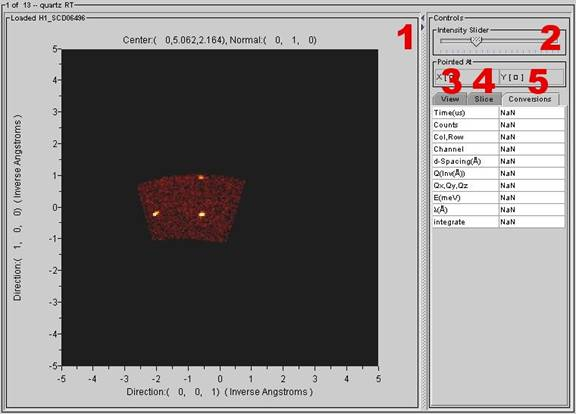

HKL Slice View
Introduction:
INSERT DESCRIPTION HERE
Getting Started:
Launching HKL Slice View
l
Before launching the HKL slice
view, there must be data loaded in the tree.
l
The HKL slice view also requires that an orientation matrix
be loaded.
l
Click on the DataSet of interest
and then follow the menus:
View > HKL
Slice View

Viewer Window:
1 HKL Slice Display
l
This displays the HKL slice for the selected DataSet.
2 Controls
Intensity
Slider – This
is used to control the image intensity in the HKL slice display.
Pointed
At – This
readout displays the XY coordinates of the currently selected point.
3 View Tab
Color Scale – This displays
the color scale currently being used in the HKL slice display
Marker Overlay –
Axis Overlay – Check this box
to show a grid axis overlay in the HKL slice display. Click the edit button to modify the grid’s
appearance.
Selection Overlay – Check this box
to show a selection overlay in the HKL slice display. Click the edit button to modify the overlay’s
appearance. The overlay can be added by
holding and dragging a mouse button in the HKL slice display while the edit
window is open.
Note: Crosshairs are not
available when a selection overlay is displayed.
Annotation Overlay – Check this box
to show an annotation overlay in the HKL slice display. Click the edit button to change the
annotation’s appearance.
Note: Crosshairs are not
available when an annotation overlay is displayed.
4 Slice Tab
Slice in Qxyz Space
Select Qxyz Plane
CN Tab
CPP Tab
CNP Tab
CQxyz Tab
Select Plane Size
Step Size –
Width –
Height –
Thickness –
Step Depth
5 Conversions Tab
l These
readouts provide information about the currently selected point in the HKL
slice display including time, the number of counts, the currently selected
column/row, channel, d-spacing, Q value, Q space coordinates, energy,
wavelength, and integrate.
Viewer Menus
File
Save DataSet to file – This
option saves the current DataSet as a new file. Supported formats include NeXus,
GSAS, ISAW XML, ZIP, and ISD.
Save
Image – Select
this option to save the visible portion of the viewer window as a JPEG picture
file.
Print
– This
option prints the visible portion of the viewer window as it appears on the
screen.
Save
Close
Viewer – This
option closes the HKL slice view window.
Edit
Sum
– This
option is used to sum either selected or unselected data.
Delete
– This
option is used to delete either selected or unselected data.
Clear
– Use
this option to clear all peak selections.
Sort
by – This
option is used to sort the peak data in a number of different ways.
View
Additional
View – This
option creates a duplicate contour view window.
Image
View – This
option changes the current window to an image view window.
3D
View – This
option changes the current window to a 3D view window.
HKL
Slice View – This option changes the current window to a HKL Slice view
window.
Contour
View – This
option changes the current window to a Contour view window.
Scrolled
Graph View - This option changes the current window to a Scrolled Graph
view window.
Selected
Graph View - This option changes the current window to a Selected Graph
view window.
Selected
Table View – This option changes the current window to a Selected Table
View window.
Table
Generator – This option changes the current window to a Table Generator
window.
Axis
Conversions – This option changes the X-axis to a different unit of
measurement.
Options
Link Views – Select this option to link the current
view with any additional views that also have this option selected.